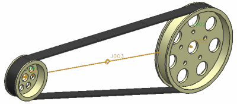

2–3 传动副命令让您联结两个或三个旋转副、滑动副或柱面副的运动。它们与齿轮以及齿轮齿条副命令的使用方法类似。您可以调整一个运动副相对于另一个运动副运动的比例，或者使用负数来反转运动副的运动方向。
您可以创建2 联接传动副或3 联接传动副。
这些命令只能在使用 RecurDyn 求解器时使用。
|

|
在选择了合适的附着类型后，您可以决定您选择的运动副在传动副中是旋转还是平移，您还可以定义运动副的比例。
3 联接传动副需要其中两个运动副被运动驱动所驱动。
2–3 传动副使用这个方程：
(r1 * q1) + (r2 * q2) + (r3 * q3) = 0
其中 r1、r2、r3为三个运动副的比例因子，而 q1、q2、q3为运动副的平移或旋转位移。
例如，假设您创建的是2 联接传动副，其中两个运动副均为旋转副。对于第一个运动副(驱动)的每一次旋转，您都想让第二个旋转副旋转它的四倍，则您需要对第一个运动副输入的比例为4，第二个运动副的比例为1。